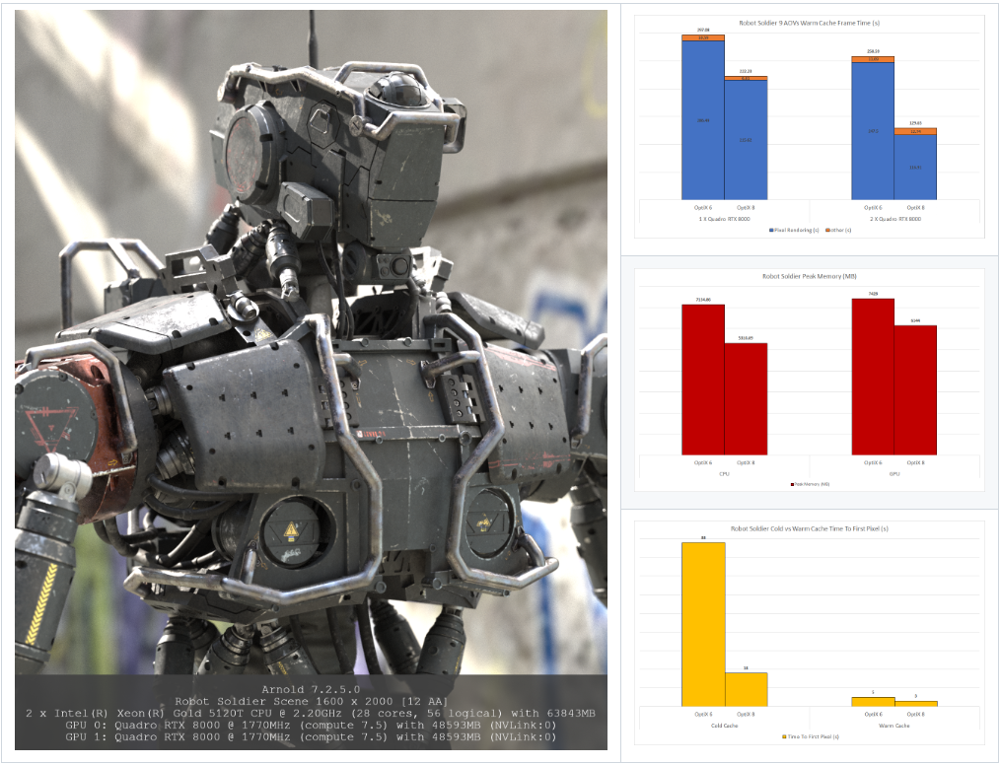

Maya 2025 搭载了 MtoA 5.4.0，其中引入了 Arnold 7.3.0.0 核心。
此版本使用 NVIDIA OptiX 8 对 GPU 渲染器进行了全面改造，性能得到大幅提升。此外，体积中现在支持全局光线采样，反射中的距离着色器以及厚曲线相交部分得到了改进，卡通着色器现在为其 aov 参数中具有标签的直接照明输出 AOV。最后，添加了新的叠加成像器，使您能够通过在渲染图像上打印文本来装饰或标记渲染。
有关最近添加的功能和错误修复的完整列表，请参见 Arnold for Maya 发行说明。
在 LookDevX 中支持 MaterialX 着色器网络
MtoA 5.4.0 添加了对新 LookDevX MaterialX 节点曲线图编辑器的支持。这允许您将 LookdevX 着色器网络指定给 Maya 几何体，并将 MaterialX 着色器节点与 Arnold 着色器混合。
渐进式抖动采样
Arnold 现在支持渐进式和自适应渲染中的抖动采样。抖动可在低 AA 采样数时产生更好的噪波分布。
GPU 渲染器改进
GPU 渲染器的很大一部分是使用 NVIDIA OptiX 8 重写的。这样可以进行许多改进，例如，启动时间更短，并且可以在多个 GPU 上更好地扩展。
- GPU 启动时间缩短：冷缓存预填充速度比以前快至少 14 倍。这意味着，在 Arnold 升级后，前几次渲染的第一个像素的时间现在将显著缩短。此开销现在已经足够低，我们不再需要执行缓存预填充步骤。
- 更好的多 GPU 扩展：在具有许多 AOV 的场景中，使用多个 GPU 进行扩展的渲染速度得到了改进。当添加第二个 GPU 时，具有 9 个 AOV 的机器人士兵场景的速度将从 Arnold 先前版本的 1.1 倍提高到 Arnold 7.2.5 的 1.7 倍。
- GPU 上新支持的功能：
- 多个渲染会话。
- 在逐面置换着色器上自动凹凸，以前，自动凹凸将使用应用的第一个着色器。
- 球体基本体上的运动模糊。
- 天顶灯光的着色器参数。
- 线框着色器中的多边形边类型。
- 通过调试闭包写入 OSL LPE。
- 图像着色器文件包裹模式。
- 工具着色器中的 ID 模式。
- 工具着色器中的 edgelength 模式。
- GPU 纹理过滤逻辑已得到改进，以便与 CPU 渲染器更匹配。
- 对 GPU 颜色管理逻辑进行了许多修复，以便在使用不同的颜色管理设置渲染多个会话时，与 CPU 渲染器更匹配。
- 改进了性能：以下制作场景显示了缩短的启动时间、在多个 GPU 上更好的扩展、更低的内存使用率和更快的渲染速度。速度和内存的提升与场景相关，在具有大量纹理的场景中更为明显。

体积中的全局灯光采样
现在，在体积中支持全局灯光采样。在体积中使用全局灯光采样时，渲染时间加速取决于灯光的数量，但即使是只有少数灯光的场景，渲染速度也会更快。
反射中的距离着色器
距离着色器现在可以正确处理次要路径，例如反射。
叠加成像器
一种新的成像器，允许您通过在渲染图像上打印文本来装饰或标记渲染。
更适用于叠加成像器的编辑器
适用于叠加成像器的编辑器现在更直观，可以预览所选的字体和样式。
改进了厚曲线相交
曲线在厚模式下平均速度提高 10%（在某些情况下，速度提高 100% 以上），特写效果更好。
卡通灯光组 AOV
卡通着色器现在输出 AOV，以便直接从其 aov 参数中带有标签的灯光进行照明。
更多增强功能
- 改进了 MaterialX 支持：Arnold 现在可以渲染混合标准库的 MaterialX 节点图表。加载 Arnold 节点定义的 DCC 将受益于新添加的 UI 元数据，并提供更好的用户体验。Arnold 现在还使用 MaterialX 1.38.8，此更新在 MaterialX 标准库中引入了新节点。有关更改的完整列表，请参见完整发行说明。
- 发射和逐灯光组 AOV：逐灯光组间接 AOV 不再包括发射。发射曲面现在仅出现在“默认”灯光组输出中。在着色器中使用发射时，灯光组 AOV 的总和现在将共同作为美景通道。
- 在 GPU 上的 SSS 中对自动凹凸进行解算：现在，在启用 sss_use_autobump 选项后，将使用 GPU 渲染器在 SSS 计算中对自动凹凸进行解算，这与在 CPU 上渲染时的行为一致。
- 使用 Intel 降噪器进行 GPU 降噪：Intel 降噪器现在通过 NVIDIA 和 Intel GPU 支持实时降噪。您可以在 OIDN 降噪器成像器的自动/CPU/GPU 模式之间切换。Arnold 现在还在日志中为降噪器提供准确的计时信息。
- 批渲染现在在许可失败时中止：如果批渲染中存在许可错误，Arnold 现在会中止。abort_on_license_fail 选项现在默认为 true，并且仅适用于批渲染。这意味着，您不必检查渲染图像序列中是否有水印。交互式渲染不会中止，并且在许可失败时会像往常一样显示水印。环境变量 ARNOLD_FORCE_ABORT_ON_LICENSE_FAIL 将覆盖此默认行为（0 = 在许可失败时使用水印进行批渲染和交互式渲染，1 = 在许可失败时批渲染和交互式渲染中止）。
- 将许可检出时间添加到渲染统计信息：渲染统计信息现在包括“许可检出时间”，这是针对特定渲染执行许可检出所花费的时间（以微秒为单位）。如果在批渲染时检出时间较长，这将有助于用户诊断。
- 自动创建不存在的 tx 文件路径：即使输出 .tx 文件的路径不存在，现在也可以生成 .tx 文件（maketx、autotx、AiMakeTx）：Arnold 现在会创建这些路径。
- 更快的重叠体积：当存在许多重叠体积时，Arnold 的渲染速度会提高几个百分点。
- 灯光强度的场景单位转化：嵌套程序中的灯光强度现在支持场景单位转化。如果程序包含灯光，而其场景单位与程序单位不匹配，则会缩放灯光强度以匹配程序。Arnold ass 文件程序的转换已经到位，但我们尚不支持 USD 和任意程序格式。
- 体积密度和发射的场景单位转化：现在，嵌套程序中的体积密度和发射支持场景单位转化。如果程序包含体积，而其场景单位与程序单位不匹配，则会缩放体积密度和发射以匹配程序。Arnold ass 文件程序的转换已经到位，但我们尚不支持 USD 和任意程序格式。
- 改进了分析：程序和体积相交时间现在单独列出，而不是包含在父 BVH 中。在其他领域也添加了分析，特别是未考虑辅助对象线程的多线程代码。这应该会产生更高质量的统计信息。
USD 增强功能
- 更新到 USD 23.11：在程序中，USD 版本已从 22.11 更新到 23.11。
- 灯光实例：现在可以使用点实例化器实例化灯光。
- Hydra 中实例的可见性和蒙版：在 Hydra 渲染代理中，Arnold 可见性和蒙版属性现在可用于实例。
- 支持作为文件格式的 UDSZ 文件：可以使用 kick 渲染 usdz 文件，并使用 usd 程序加载它们。
- Hydra 中的正交摄影机：Hydra 渲染代理现在支持正交摄影机。
- Hydra 中的像素纵横比：Arnold 渲染代理现在支持 RenderSetting 基本体中的 pixelAspectRatio 参数